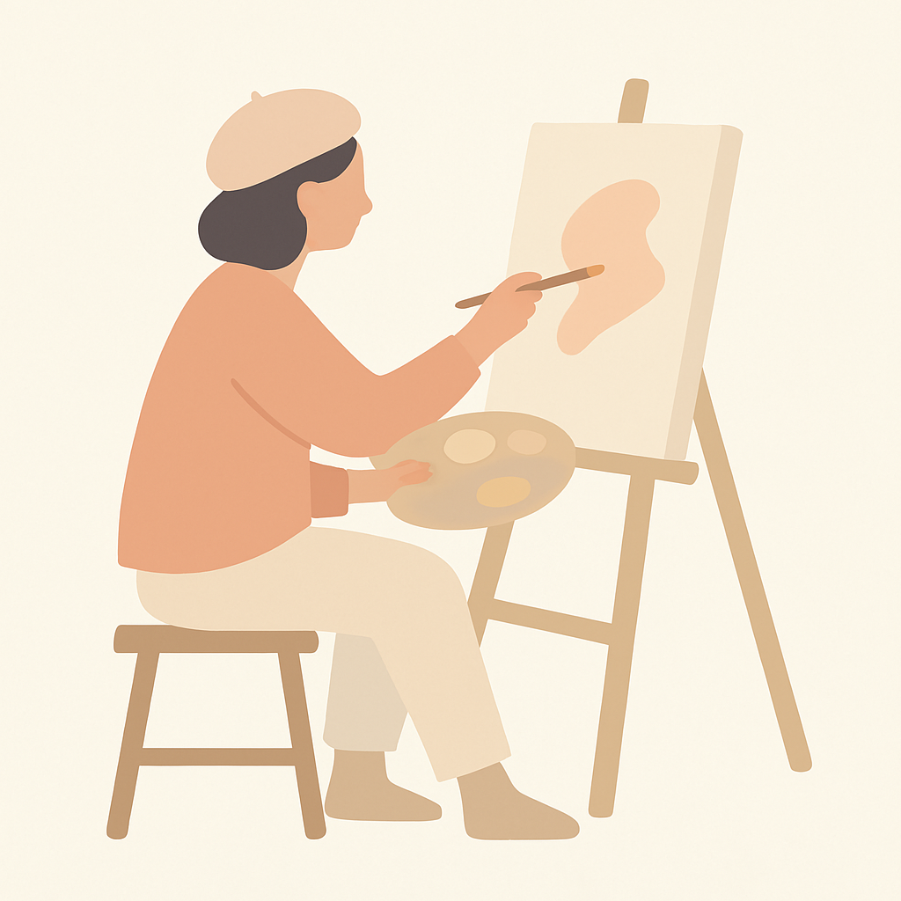
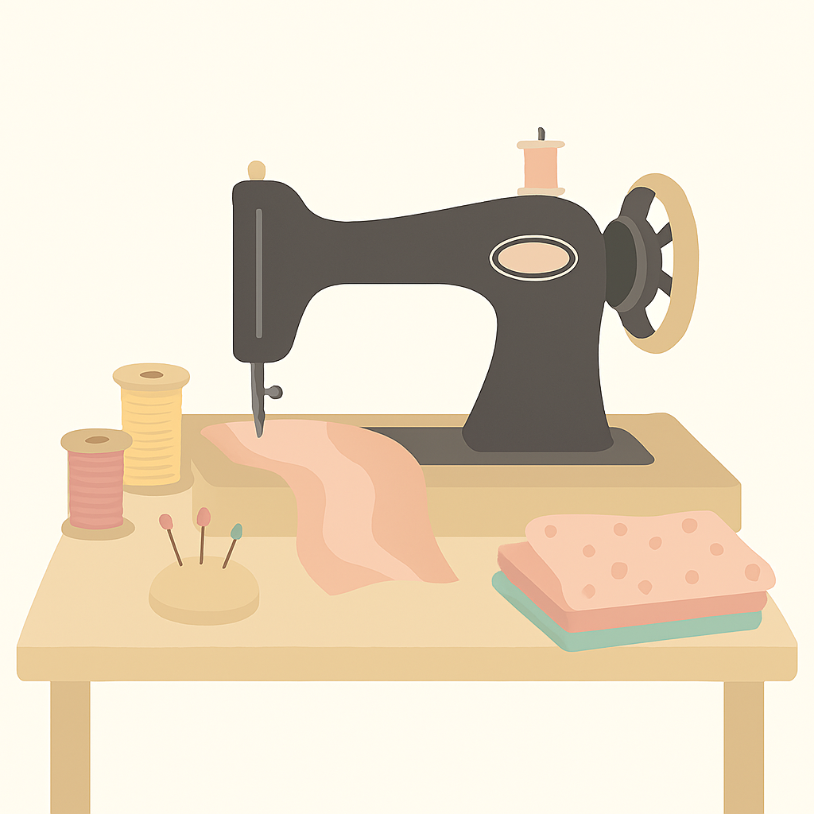
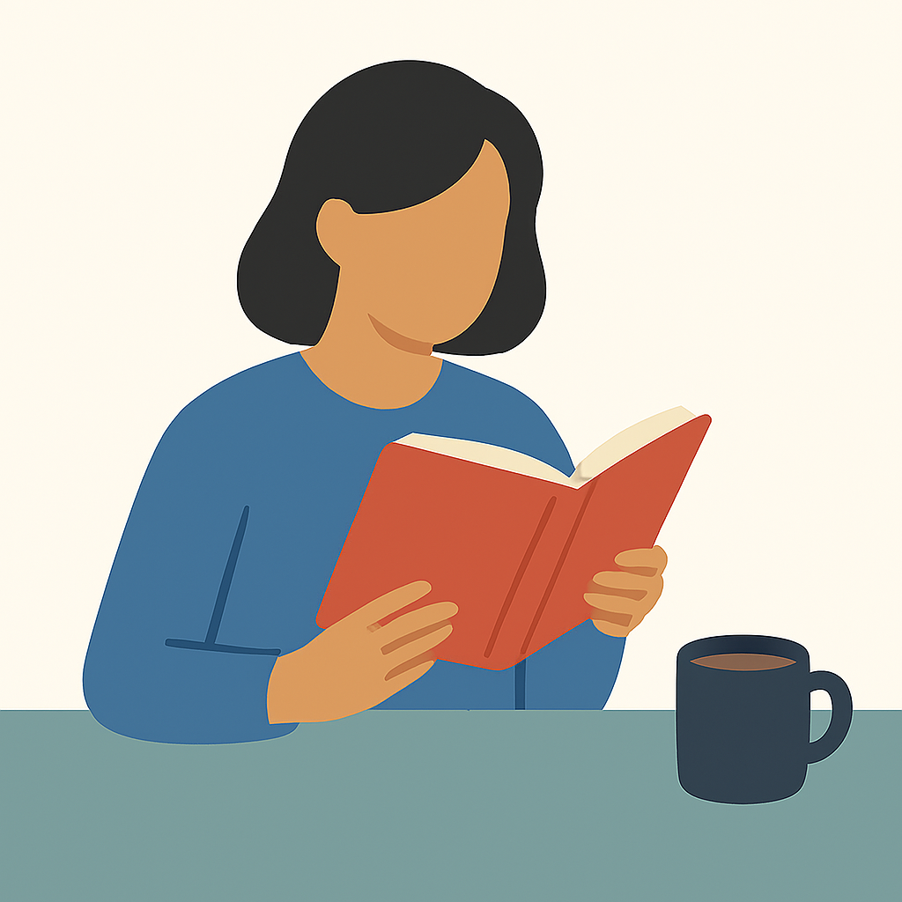

Pintura
La pintura es mi espacio de libertad. Me permite experimentar con colores,
texturas y formas para crear mundos que solo existen en mi mente.
Cada trazo es una oportunidad para explorar emociones y dejar que la
creatividad fluya sin límites.
- Dato curioso: Pinto más en la madrugada que en el día.
- Dato curioso: Me gusta mezclar acrílicos con materiales no convencionales.
- Dato curioso: Siempre empiezo con una idea, pero el resultado suele sorprenderme.

Costura
Aunque coser no es mi pasión principal, me conecta con lo que estudié
y me recuerda que el diseño es más que ideas: también es técnica.
La costura me da disciplina y paciencia, además de permitirme explorar
la transformación de materiales en objetos útiles y estéticos.
- Dato curioso: Prefiero personalizar ropa antes que confeccionar desde cero.
- Dato curioso: Me inspiran los estampados étnicos y urbanos.
- Dato curioso: Tengo más telas guardadas de las que realmente uso.

Lectura
La lectura es un refugio y una forma de viajar sin moverme del lugar.
Me atraen especialmente los temas de psicología, creatividad y literatura
contemporánea, porque me ayudan a reflexionar sobre la mente humana
y a encontrar inspiración para mis proyectos artísticos.
- Dato curioso: Siempre llevo un libro en mi bolso.
- Dato curioso: Subrayo frases que me hacen pensar, incluso en novelas.
- Dato curioso: Disfruto leer con una taza de café al lado.